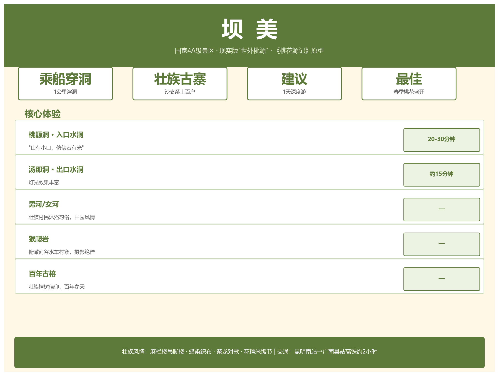

坝美旅游攻略

现实版"世外桃源" · 乘船穿洞 · 壮族古寨 · 国家 4A 级景区
一、景区概览
| 参数 |
详情 |
| 等级 |
AAAA |
| 位置 |
文山州广南县坝美镇，距县城约 40 公里 |
| 核心体验 |
乘船穿越 1 公里溶洞，豁然开朗见壮族古寨 |
| 原型 |
陶渊明《桃花源记》——"山有小口，仿佛若有光" |
| 民族 |
壮族"沙支系"，上百户人家 |
| 建议时长 |
1 天（深度体验 2 天 1 晚） |
二、核心景点
2.1 溶洞穿行
| 景点 |
方向 |
时长 |
特点 |
| 桃源洞 |
入口水洞 |
20-30 分钟 |
"山有小口"，钟乳石林立，经典桃花源意境 |
| 汤那洞 |
出口水洞 |
~15 分钟 |
灯光效果更丰富 |
2.2 村内景观
| 景点 |
特色 |
| 桃花岛 |
驮娘江分流环绕，与稻田水车相映 |
| 男河 / 女河 |
当地村民夏季沐浴习俗，田园风情 |
| 猴爬岩 |
乘船前往，俯瞰河谷、水车和村寨，摄影绝佳 |
| 古榕树 |
村中多株百年古榕，壮族"神树"信仰 |
2.3 壮族民俗
| 内容 |
说明 |
| 建筑 |
麻栏楼（壮族传统干栏式吊脚楼） |
| 手工艺 |
蜡染、织布 |
| 节庆 |
祭龙、对歌、花糯米饭节 |
| 生活 |
自给自足的农耕生活 |
三、交通指南
3.1 抵达广南县
| 方式 |
路线 |
耗时 |
| 高铁（推荐） |
昆明南站 → 广南县站 |
约 2 小时 |
| 长途汽车 |
昆明 → 文山 → 广南 |
6-7 小时 |
| 自驾 |
昆明 → 广昆高速"广南/那洒"出口 → 广南 |
~5 小时 |
3.2 广南县城 → 坝美景区
| 方式 |
耗时 |
说明 |
| 3 路旅游专线 |
1-1.5 小时 |
广南客运站乘巴士直达 |
| 包车 / 网约车 |
~1 小时 |
更便捷，适合家庭/多人出行 |
| 自驾 |
~1 小时 |
山路弯多，谨慎驾驶 |
四、最佳旅游季节
| 季节 |
月份 |
景色 |
推荐 |
| 春季 |
3-5 月 |
桃花油菜花盛开，摄影黄金期 |
★★★★★ |
| 秋季 |
9-11 月 |
稻谷金黄，景色治愈，适合慢游 |
★★★★★ |
| 夏季 |
6-8 月 |
绿意盎然但雨多，溶洞潮湿 |
★★★ |
| 冬季 |
12-2 月 |
游客少，宁静萧瑟 |
★★★ |
最佳：3-5 月桃花季和 9-11 月稻香季。
五、门票信息
5.1 常规门票
| 类型 |
价格 |
包含 |
| 标准票 |
100 元/人 |
桃源洞、汤那洞、猴爬岩、桃花谷 4 景点 + 三段船票 + 一段马车 |
5.2 坝美 99 元通行证
- 自 2025 年 12 月 1 日推出
- 售价 99 元，有效期 396 天
- 无限次入园，适合多次前往
购票渠道："坝美世外桃源景区"官方公众号 / 携程，出行前建议核实最新政策。
六、住宿推荐
| 类型 |
价位 |
代表 |
特点 |
| 村内民宿 |
150-400 元/晚 |
榕树下民宿、缘溪园客栈、绿满岛 |
吊脚楼体验，晨昏静谧，农家菜 |
| 县城酒店 |
200-500 元/晚 |
特安呐酒店等 |
设施完善，选择多 |
旺季（节假日）建议提前预订村内民宿。
七、行程推荐
一日游
广南县城出发 → 桃源洞乘船入村 → 村寨漫步/桃花岛
→ 猴爬岩观景 → 汤那洞乘船出村 → 返程
两日深度
| 时间 |
行程 |
| Day 1 |
中午入村 → 下午村寨漫步、古榕树、水车田园 → 夜宿民宿 |
| Day 2 |
清晨河谷晨雾 → 猴爬岩 → 壮族手工艺体验 → 下午出村返程 |
八、实用贴士
| 类别 |
提醒 |
| 穿着 |
防滑运动鞋/徒步鞋（石板路、上下船） |
| 防水 |
溶洞潮湿滴水，手机相机用防水袋 |
| 预订 |
节假日提前预订往返票和住宿 |
| 尊重 |
拍照前征得村民同意，尊重壮族习俗 |
| 信号 |
村内部分区域信号弱，提前下载离线地图 |
九、与普者黑比较
| 维度 |
普者黑 |
坝美 |
| 等级 |
5A |
4A |
| 核心意象 |
喀斯特山水田园、万亩荷花 |
世外桃源、桃源穿洞 |
| 游玩方式 |
游船打水仗、登山观景 |
乘船穿洞、古寨漫步 |
| 旺季 |
6-9 月荷花季 |
3-5 月桃花季 |
| 适合人群 |
家庭、年轻群体、摄影 |
文艺、慢游、文化体验 |
| 游览时长 |
1-2 天 |
1-2 天 |
| 交通 |
高铁直达普者黑站 |
高铁到广南县站 + 1 小时乘车 |
参见：普者黑旅游攻略 | 文山旅游总览
十、周边联动
坝美所在的广南县，还可串游：
| 景点 |
距离 |
特色 |
| 八宝风景区 |
~60 km |
八宝米原产地、喀斯特峰丛 |
| 广南古城 |
县城内 |
句町古国文化 |
| 普者黑 |
~150 km |
5A 级山水田园 |
关联阅读：普者黑旅游攻略 | 文山旅游总览 | 广南八宝米